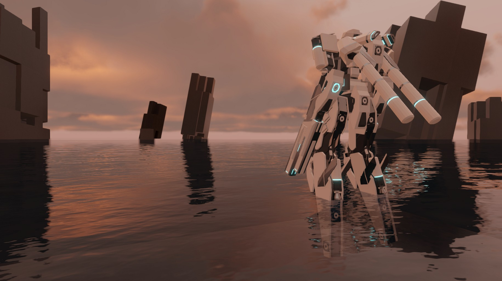

NonameMech v2
課題制作、個人
制作時期: 2021年11月22日
制作時間: 46日
概要
Unityで制作した3Dカスタムロボットアクションゲーム。
ロボットの各所にあるジョイントにパーツを付けてカスタマイズすることで性能と見た目を変えることができる。
極めて短時間で作ったため、アクション面が土台部分しかない。
3DモデルはSketchUpで作成した。
作成目的
-
パーツを組み合わせてカスタマイズできる機能の実装。
このゲームの根幹となる機能。
ロボット以外のものにも使用できるため、他のゲームにも再利用できる。
-
マテリアルを変更せずに色、質感を変更できるようにする仕組みの実装。
マテリアルを増やしすぎるとパフォーマンスが落ちるため、その対策の一つ。
メッシュの頂点カラーを使用することで実現。
しかし、そのためにメッシュを分割しないと綺麗に色分けができず、メッシュが大幅に増えてしまった。
-
小さなセーブデータの実装。
パーツを大量に設置するため、json形式のようなデータでは容量が大きくなってしまう。
データの数値のみをバイト列で保存することでかなり容量を削減できた。
更に、パーツに必要なデータを決定、範囲を絞ることでさらに少ないバイト数にできた。
参考にした作品
-
BreakArtsシリーズ
カスタマイズ要素、ロボットのデザイン
-
Armored Coreシリーズ 4 ~ VD
アクション要素
使用した素材
- Color Picker Triangle
- Outline toolkit
- Textures.com
- UnityのURP環境にて追加されるアセット
- Animation Rigging
- 水のNormalmap